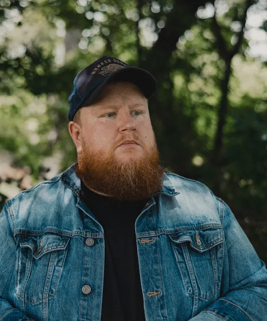

Folk · Dallas, TX
Simple truth that pierces the skin.
Dallas native, nationally touring. Cameron Matthew Ray writes songs of struggles and journeys, melancholy, brutal and simple.
Has opened forGriffin HouseAndrew BelleGungorSean McConnellForeigner
The songs
The ones people keep playing.
“Anymore” has passed 300,000 plays on Spotify. The newer singles, “Old Leaf”, “Lost With You” and “Her Song”, arrived in 2023.
Setlist · most played
- Anymore2017 single307,707 plays3:06
- Here for You2018 single78,258 plays3:11
- Old Leaf2023 single60,362 plays3:42
- Lost With You2023 single31,755 plays4:05
In his words
Melancholy, brutally and simple truth.
A seasoned vet of the singer-songwriter and folk world, with lyrics that pierce your musical skin.

On the road
Opening for the veterans.
Cameron has opened for Griffin House, Andrew Belle, Gungor, Sean McConnell and Foreigner, and he tours nationally from his home base in Dallas.
Merch
This too shall pass.
The “This Too Shall Pass” T-shirt: an arched window, a bare tree and his name, on soft slate blue.
$20
Booking
Bring the songs to your room.
Shows, songwriter nights, openers and private events. Email Cameron directly.